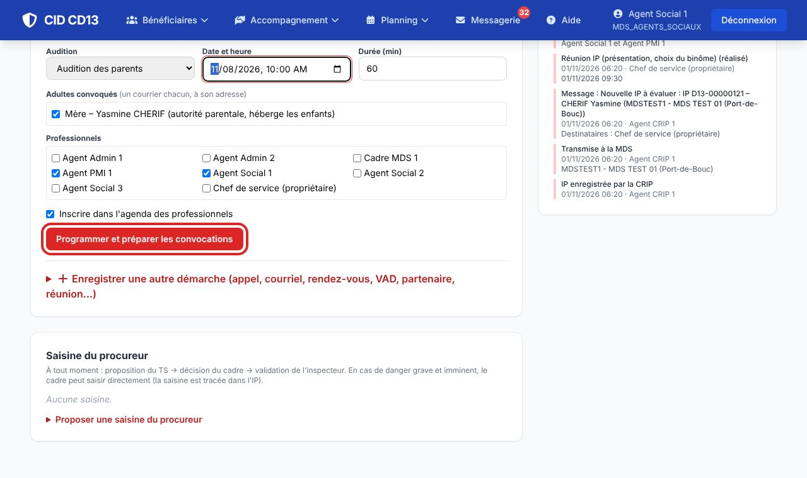
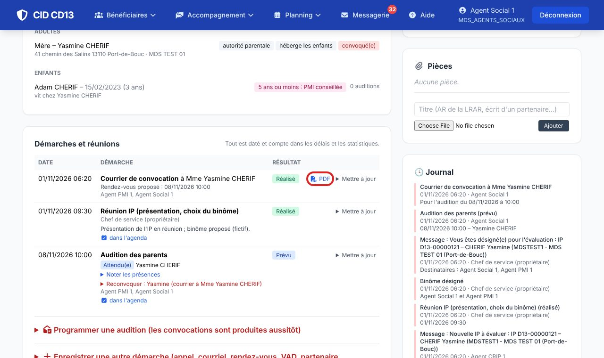
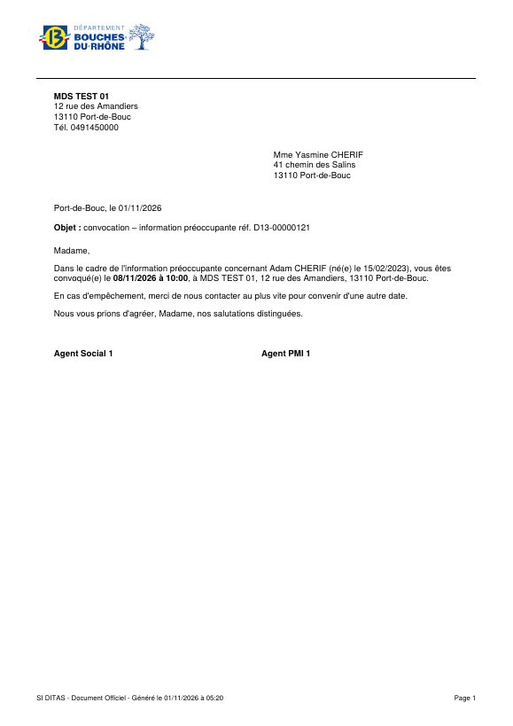
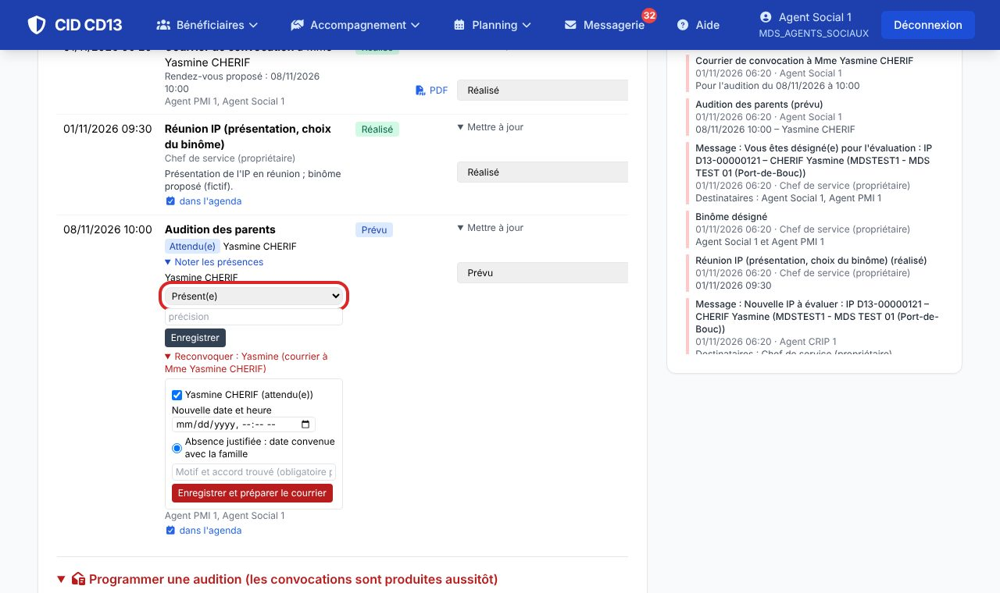
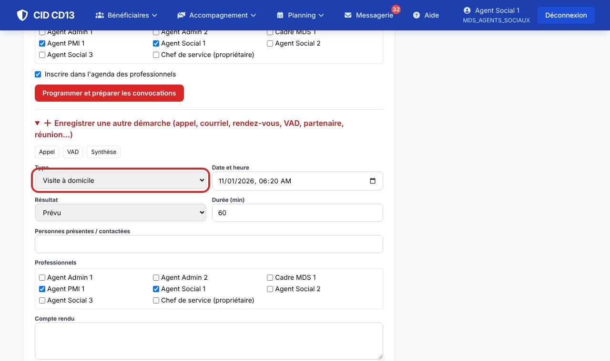
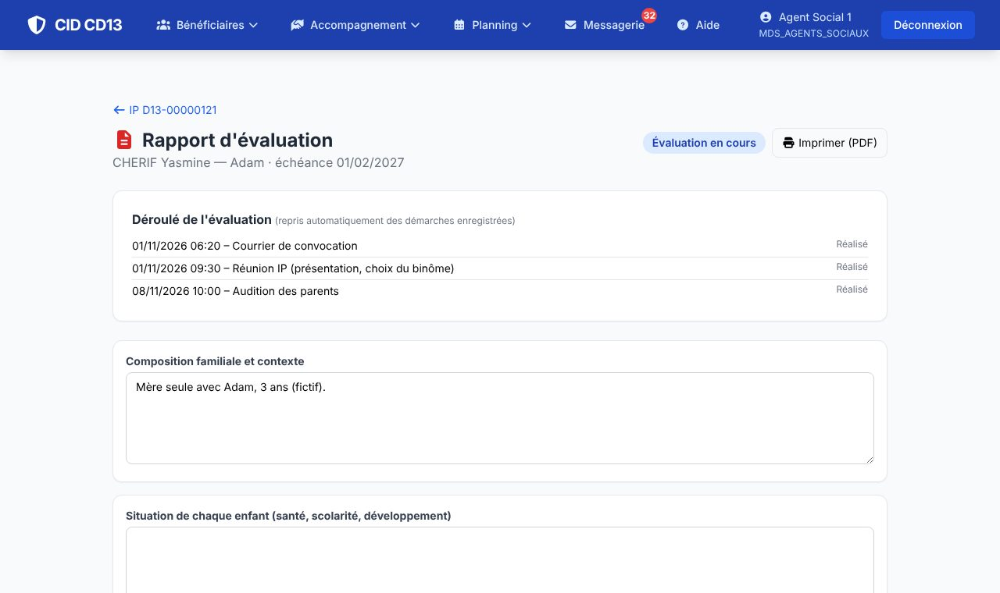
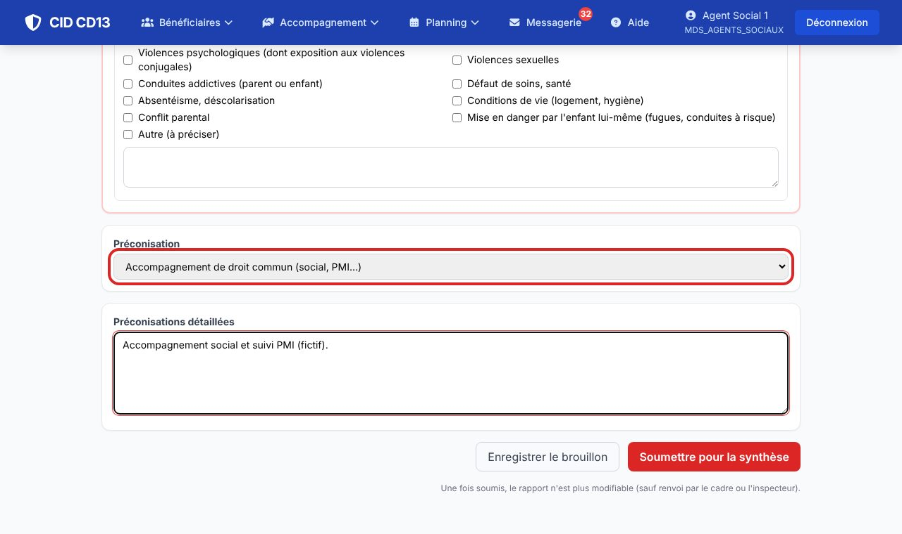
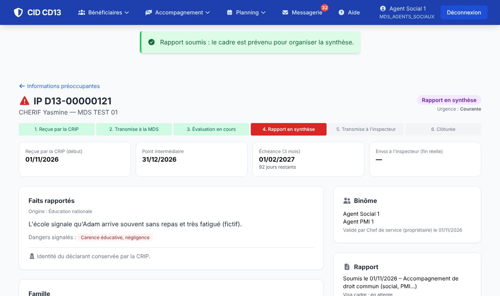

1Programmer une audition



- Ouvrez Programmer une audition : audition des parents, ou des enfants (même heure, reçus un par un).
- Choisissez la date, la durée, les adultes convoqués (un courrier chacun, à son adresse), les enfants (un courrier par foyer, à l'adulte qui les héberge) et les professionnels.
- Cliquez sur Programmer et préparer les convocations : les courriers sont produits aussitôt (lien PDF dans les démarches) et l'audition s'inscrit dans l'agenda.
2Noter les présences et relancer

- Après l'audition, notez pour chacun : présent, absent, ou absence justifiée – report convenu.
- Reconvoquer : nouvelle date, à l'amiable (date convenue avec la famille) ou par lettre recommandée (le n° de LRAR est demandé).
Une famille qui ne vient pas malgré la LRAR peut être déclarée « non coopérante » dans le rapport.
3Enregistrer les autres démarches

- Ouvrez Enregistrer une autre démarche (boutons rapides : Appel, VAD, Synthèse…) : type, date, résultat, personnes contactées, compte rendu.
- Mettre à jour sur une démarche prévue permet d'en noter le résultat (réalisé, absent, sans réponse…).
4Rédiger et soumettre le rapport



- Bouton Rédiger / ouvrir du cadre Rapport : le déroulé de l'évaluation est repris des démarches enregistrées.
- Complétez les rubriques (composition familiale, situation et parole des enfants, parole des parents, conditions de vie, partenaires, analyse).
- Pour chaque enfant : en danger, en risque de danger ou pas en danger, avec les types de danger constatés.
- Choisissez la préconisation et détaillez-la. Enregistrer le brouillon pour y revenir ; Soumettre pour la synthèse quand le rapport est prêt.
Bon à savoir
- L'évaluation dure 3 mois à compter de la réception par la CRIP, avec un point intermédiaire : les dates s'affichent en haut de l'IP, et CID envoie des rappels au cadre.
- Une fois soumis, le rapport n'est plus modifiable (sauf renvoi par le cadre ou l'inspecteur).
Et ensuite ?
Cliquez sur une image pour l'agrandir. Le cadre rouge montre où cliquer ou quoi remplir. Toutes les données affichées sont fictives.